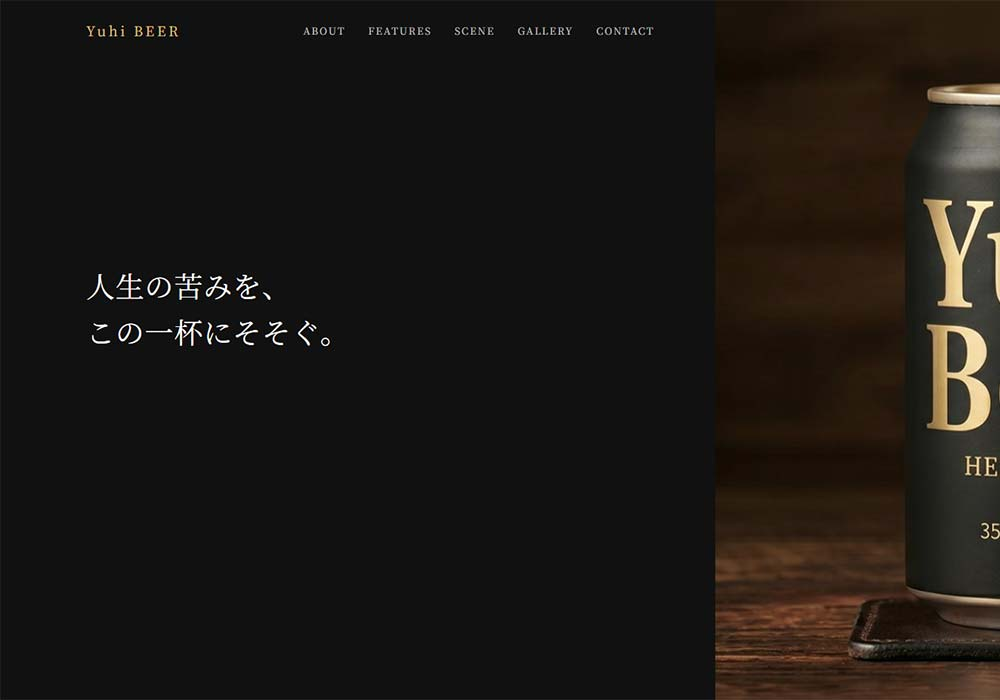
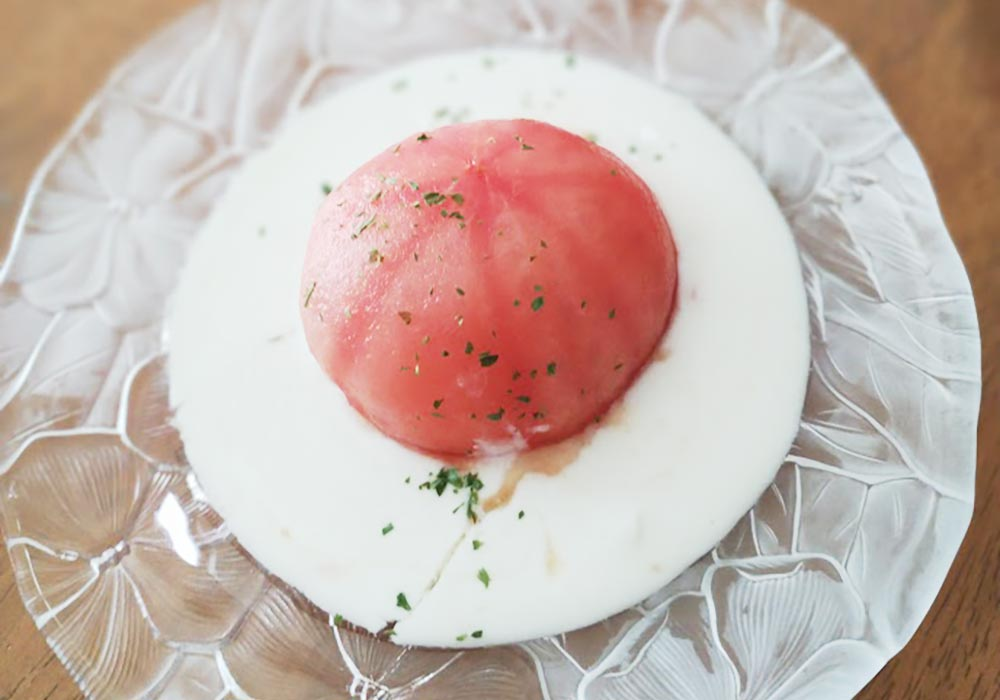
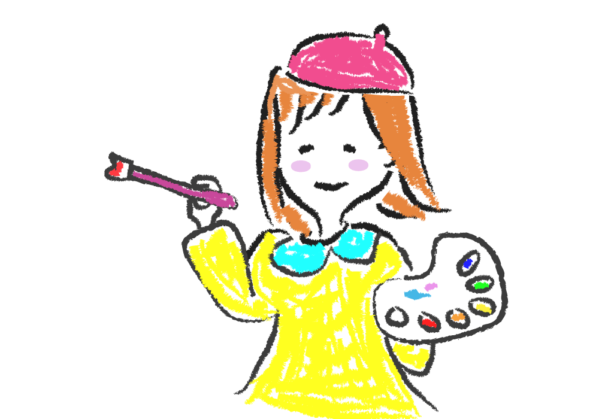
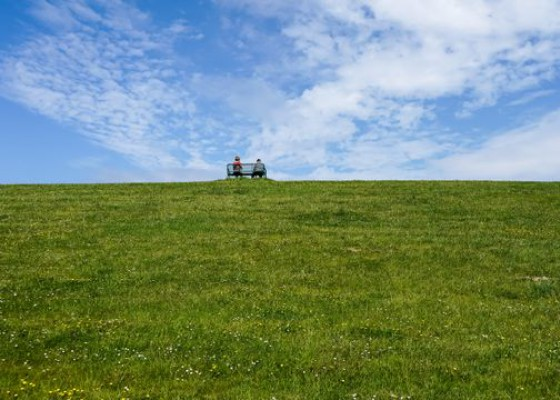
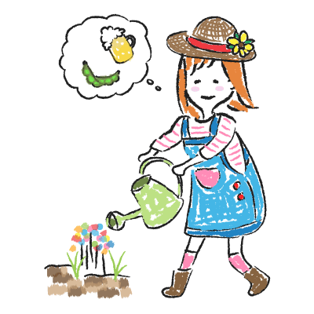

日々の暮らしの中で見つけた小さな楽しみを、絵や写真、文章にしています。
絵本を作ったり、WEBデザインをしたり、思いついたことを少しずつ形にしたり。
ここは、そんなわたしの小さな世界です。
わたしの世界MY WORLD
えほん
思いついたときにだけ開く、小さなえほんです。
ことばも絵も、決まりごとはなくて。
ゆっくり増えていくページを、
少しずつ置いています。

WEB制作
「あったらいいな」の世界を大切にしながら、Webデザインを制作しています。
素敵だと思ったものからヒントをもらい、自分なりの世界観で表現しています。
詳しくみる

お料理の時間
毎日のごはんには思い出がたくさんつまってます。
ちょっと切ない日も、大笑いした日も、かけがえのない時間の記録をここに。
いらっしゃいませ。

イラストの部屋
思いついたままに描く、線と色の遊び。
はじめて描いたイラストが、誰かの目にとまる瞬間。
そのドキドキやわくわくもここに残しています。
成長していく過程もお楽しみに。

エッセイ
通りすぎていく景色の中から、
忘れたくない瞬間だけを集めています。
わたしのはなしABOUT ME
凪 / nagi
はじめまして、凪です。
憧れに触れながら、自分の中の「やってみたい」を少しずつ育てています。
描きはじめたイラスト。
つくりはじめたWebサイト。
まだ小さな芽ですが、いつか花ひらくことを夢みています。
